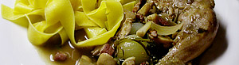

Coq au vin à la bourguignonne
4,5 von 6pouletschenkel anbraten und mit mehl bestäuben. 100 gr speckwürfeli, 10 saucenzwiebeln, 2 knoblauchzehen und champignons dazugeben. mit ca. 4dl bestem burgunder ablöschen. nach bedarf mit mit bouillon ergänzen. petersilie, thymian, salz und pfeffer beigeben. 45 min köcherln lassen.
